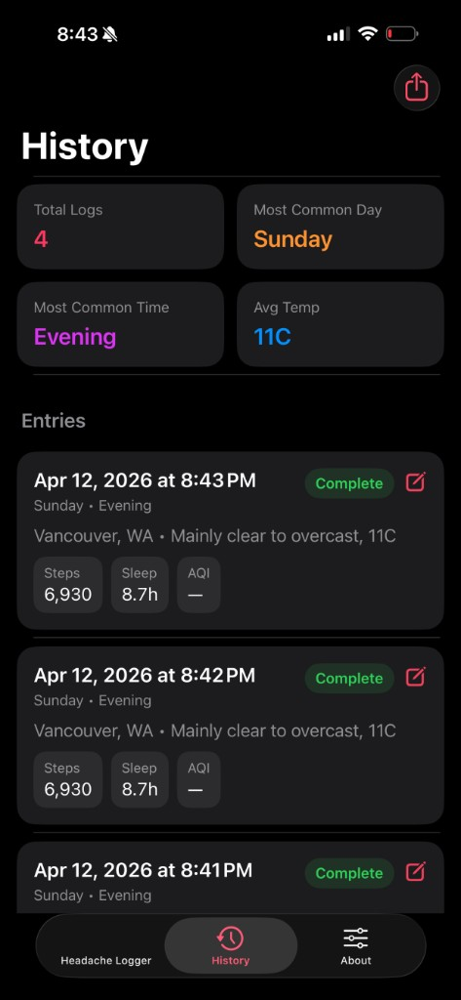

Press once when a headache starts. The app records the moment and fills in Health, weather, and environmental context automatically.
iPhone · Apple Watch · Widgets
Download on the App Store

Every tap captures what was happening around you.
Steps, sleep, heart rate, HRV, SpO₂, VO₂ max, audio exposure, mindful minutes, and recent workouts — captured automatically.
Temperature, barometric pressure, humidity, air quality, UV index, and pollen levels at the moment you log.
Weekday, hour, part of day, time since last sleep, and timezone — to help spot recurring triggers.
Share your full history with 60+ columns of context via email, AirDrop, or any share destination.
Optionally mark severity (slight, medium, extreme) and add personal notes. Turn the prompt on in Settings or during onboarding.
One-tap logging on Apple Watch with Health and weather context. Events queue and sync to your iPhone.
A small widget for instant logging. The app enriches the entry with full context when you next open it.
One Tap Headache Tracker stores everything on your device. No accounts, no analytics, no ads, no cloud sync. Location is used only to fetch local weather from Open-Meteo — raw coordinates are never stored. Your data is only shared when you explicitly export it.
Privacy Policy →How it's built and why it matters.
When you have a headache, you don't want to fill out a form. You want to press one button and move on. But later, when you're trying to find patterns, you wish you had more context.
Headache & Migraine Logger solves both: one tap to log, rich context attached automatically. Your future self gets a spreadsheet with everything that might have triggered it.
| Platform | iOS 17+, watchOS 10+ |
| Storage | SwiftData on-device (App Group); no accounts or cloud sync |
| Health Data | Sleep, HRV, activity, mindful minutes, heart rate, etc. |
| Weather | Open-Meteo API (pressure, temp, humidity, pollen) |
| Air Quality | Open-Meteo air quality API at time of entry |
| Pro | Optional yearly, monthly, or lifetime IAP for patterns, alerts, and imports |
| Export | 60-column CSV with all signals joined by timestamp |
One-tap logging. The default flow: open app, tap severity, done. Optional notes if you want. The app captures the timestamp and starts fetching context immediately in the background. No loading spinner blocking the UI.
Context without clutter. Every headache entry stores 50+ variables you didn't have to input: weather pressure changes, air quality index, sleep duration from last night, HRV trend from the past week. It's there when you need it, invisible when you don't.
CSV export for doctors. The export isn't a pretty PDF — it's a raw CSV with every column labeled. Doctors and researchers can import it directly. Users have emailed it to neurologists who appreciated the granularity.
Watch app for discrete logging. In a meeting when a headache starts? Log it from your wrist. No phone pull-out, no obvious app usage. The complication shows today's count at a glance.
Migraine Headache Tracker Log is approved and live. Free with no account required.
Download on the App Store